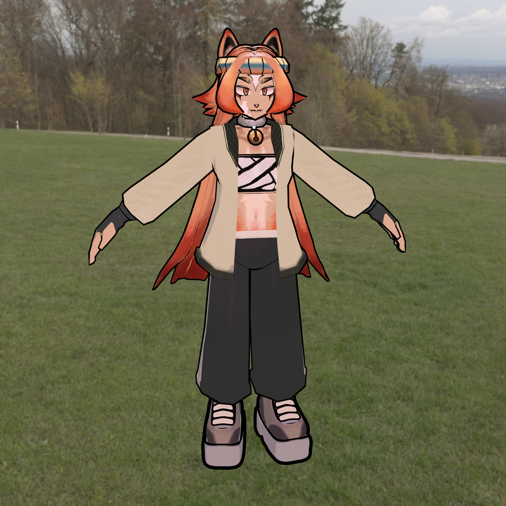
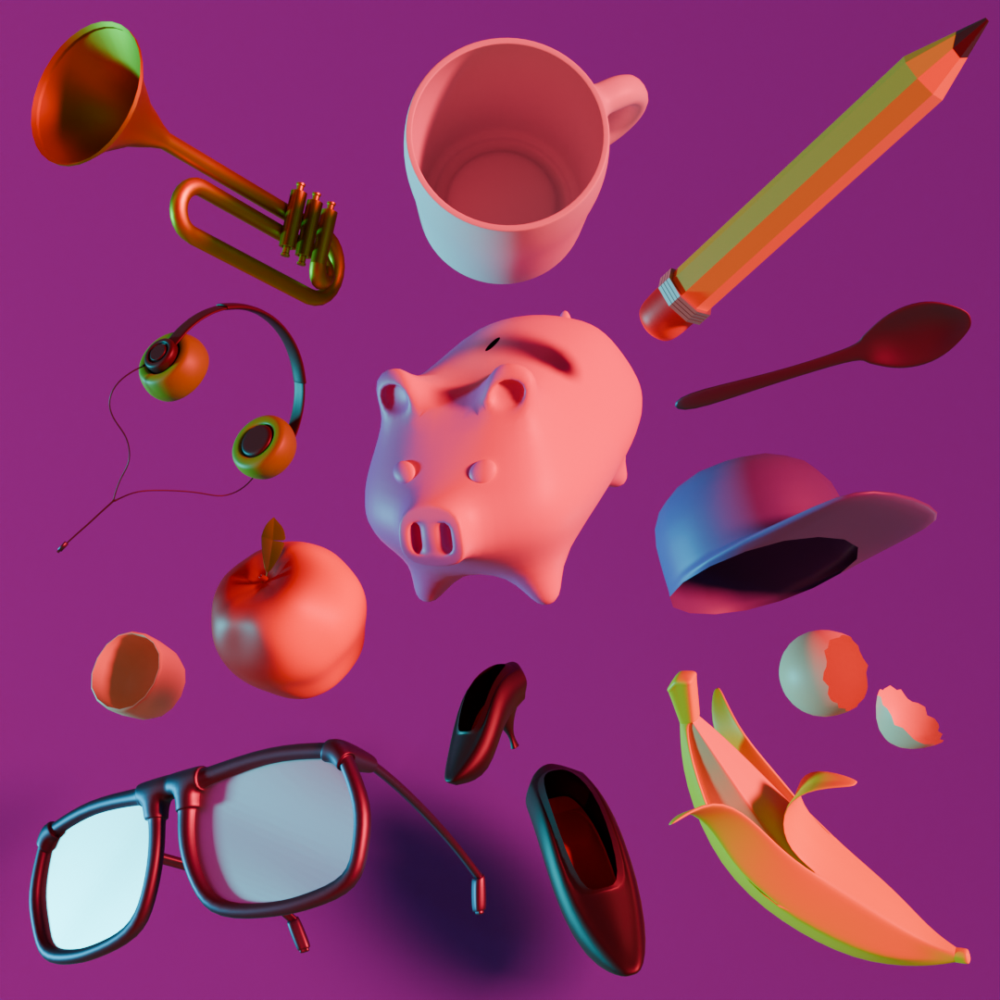
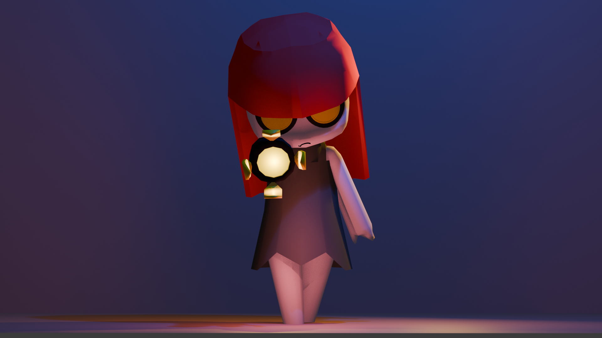

About Me
I'm Fionabelle G. Liston, a sophomore Bachelor of Arts in Multimedia Studies student at UP Open University currently residing in Parañaque City. My goal is to elevate my creative skills to a professional level.
Things I Love
- Digital Illustration
- Learning Blender
- Watching Documentaries/Video Essays on YouTube
- Reading Manga
- Retro Game Emulation
- Playing Video Games (Path to Nowhere, My Hero Ultra Rumble)
Passion Projects
Brawlfur
An anime-style 3D model made to test out curves for hair modeling, toon shading, and line art modifier for a 2D look.

Day 2 Objects
This is my output after following the Day 2 video of the YouTube series "Introduction to Blender Series - For Absolute Beginners" which focused on creating objects in Object Editing mode. Despite being a series made to be done daily, it was so difficult that it took me more than a week to accomplish which made me halt from following the series after finishing this project. If I have the time, I will complete the series once and for all.

Rinblast
A lowpoly chibi-style 3D model made to practice simple posing and lighting. She is my first original character I made into a 3D model.
